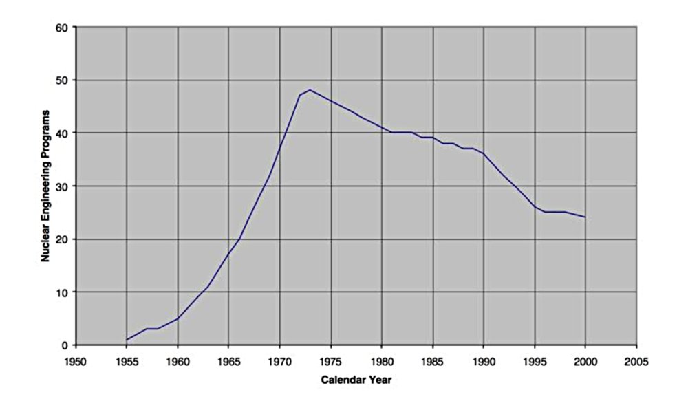
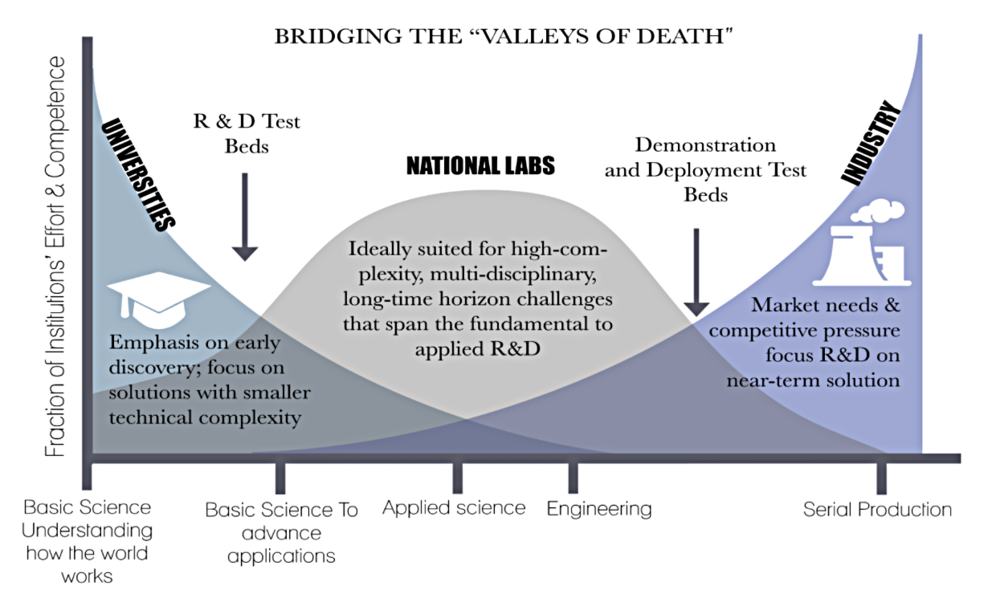

The mission of Abilene Christian University is to educate students for Christian service and leadership throughout the world. Our vision is that by 2020, ACU will be a premier university for the education of Christ-centered, global leaders. In the Department of Engineering and Physics this has been lived out best when:
- Students and faculty work together in a mentoring relationship
- They address real world problems
- These real-world problems have global impact
These elements helped shape the mission for the NEXT Lab at ACU. The mission of the NEXT Lab is to address three of the most pressing needs in the world:
- Safer, cleaner, and less expensive energy
- Pure and abundant water
- Medical isotopes for diagnosing and treating cancer
Abilene Christian University’s Department of Engineering and Physics is well positioned to contribute in significant ways to address these needs. The department is widely recognized for involving undergraduates in world-renowned research alongside its distinguished faculty, setting ACU apart from most universities.
The NEXT Lab fits perfectly into this model, as students will help develop a fluid simulator for a Molten Salt Research and Test Reactor (MSRTRx). The system would allow for testing advanced instrumentation, evaluating different salt properties, making fundamental data measurements, and testing hardware that can be used with molten salts.
The molten salt test loop will be housed in the new Engineering and Physics Laboratories. It will provide critical measurements needed to advance the reactor design and allow for regulatory licensing of a future research and test reactor. Having an on-site test facility will provide unprecedented access for students and faculty to collaborate on cutting-edge research to solve one of the world’s most pressing problems: the need for clean, safe, and affordable energy.
It is hard to imagine a program better suited than the NEXT Lab to serve those who are most in need around the world while fulfilling ACU’s 21st-Century Vision to build distinctive and innovative programs, and produce leaders who think critically, globally and missionally. Students working in the NEXT Lab will be extremely well prepared to serve and lead throughout the world in the fields of nuclear science and engineering.
Science education and research at ACU has undergone an extraordinary transformation through the university’s Vision in Action initiative. The $45 million science component of this initiative included the renovation of Bennett Labs and the Onstead Science Center, as well as the creation of the Halbert-Walling Research Center. ACU’s new complex of state-of-the-art science facilities provide laboratory space to meet modern requirements for cutting-edge research, making this the ideal time to launch the NEXT Lab.
COLLABORATION OPPORTUNITIES
Within the Department of Engineering and Physics, the potential to collaborate with other engineering and physics faculty and our students is both abundant and central to the success of this program.
Outside of the department, this project has a wide range of technical challenges that will also benefit from collaborators in other departments while providing them with excellent undergraduate research projects.
RENEWED INTEREST
FROM THE INDUSTRY: Currently in the US and Canada, there are about 50 companies, backed by more than $1.3 billion in private capital, developing plans for new nuclear plants. The diverse group of 12 companies includes small startups and big-name investors like Bill Gates. What they all have in common is that they are working to advance nuclear technologies. Multiple companies have been contacted or contacted the NEXT Lab personnel about potential collaborations. While nothing has been formalized, there is across the board willingness and desire to collaborate with the NEXT Lab at ACU.
FROM ACADEMIA: The field of nuclear engineering is a young field of engineering compared to the more common engineering disciplines like mechanical and civil engineering. There are many ways to track the growth, decline, and recent turnaround of the field. One way to demonstrate this is by the number of universities that have a nuclear engineering program. The figure below shows the growth and decline of the field from 1955 to 2000. At its peak there were about 50 universities in the US that offered a degree in nuclear engineering. From the early 1970s until the turn of the 21st century, the number continued to decline as over half of the programs were cancelled. However, the trend has reversed itself again and as of 2013 there were 37 programs in the country.
FROM THE U.S. DEPARTMENT OF ENERGY (DOE): DOE recently announced the new program Gateway for Accelerated Innovation in Nuclear (GAIN), which is specifically aimed at moving advanced reactor designs to commercialization. GAIN is focused on helping advance new nuclear technology past the two stages of development where most new innovations currently die. DOE commonly refers to these spots as “valleys of death.” The figure below helps to define these trouble spots. Based on DOE’s renewed interest in advancing new nuclear technology and ACU’s Nuclear Physics Research Group’s track record, it is extremely likely that future grant applications from GAIN would be successful.
